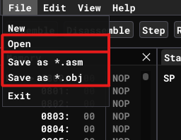
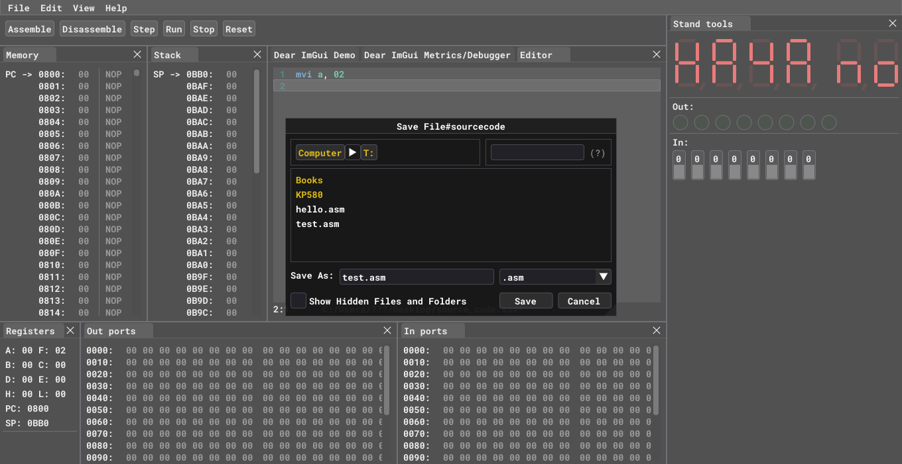

Saving and Loading
Saving
;
You can save data in two different ways:
- Save source code
- Save machine code
By clicking Save as *.asm you can save source code from Editor window as .asm file. When you click Save as *.asm window shown below will pop up.

In this pop-up window you can choose file location and file name to save it in your file system.
By clicking Save as *.obj you can save machine code from Memory. This approach saves raw bytes from memory to .obj file on your file system. Same window as above will pop-up to let you choose location and file name.
Loading
You can load saved data by clicking Open button. When loading emulator will figure out what file format you are trying to open and load that file either as source code or machine code.
Same window will pop-up for you to choose file from your file system.